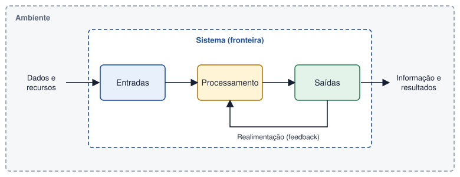

Tema 1 · Fundamentos
Introdução à análise de sistemas
Conceito de sistema, sistema de informação, dados e informação
Quando levantamos dinheiro num multibanco, validamos o passe num torniquete ou consultamos as notas na plataforma da escola, estamos a usar sistemas de informação. Quase nunca pensamos neles, mas alguém teve de os analisar antes de existirem: perceber o que a organização precisava, quem os ia usar e que informação tinham de produzir. Essa é a tarefa da análise de sistemas.
O que é um sistema
Sistema é um conjunto de elementos que se relacionam entre si e trabalham em conjunto para atingir um objetivo comum.
Qualquer sistema pode ser descrito por quatro ideias: o que entra (entradas), o que lhe acontece (processamento), o que sai (saídas) e a forma como os resultados ajudam a corrigir o funcionamento (realimentação, ou feedback).

Dados e informação
Os dados são factos em bruto, sem contexto, que sozinhos pouco nos dizem. A informação resulta de organizar e interpretar os dados, de modo a terem significado para quem decide.
| Dados | Informação |
|---|---|
| 17 · Ana · 2026-10-06 · 14,5 | «A Ana, com 17 anos, obteve 14,5 valores no teste de 6 de outubro.» |
| Lista de 300 vendas diárias | «As vendas de terça-feira foram 12 % superiores às da semana anterior.» |
Se a informação for útil, correta e chegar a tempo, ajuda a tomar decisões. Se for incompleta ou tardia, pode ser pior do que não a ter.
Sistema de informação
Sistema de informação (SI) é o conjunto organizado de pessoas, procedimentos, dados, equipamento e software que recolhe, guarda, processa e distribui informação para apoiar as operações e as decisões de uma organização.
- Pessoas — utilizadores, operadores, gestores.
- Procedimentos — regras e passos a seguir (por exemplo, como se regista uma devolução).
- Dados — o que é recolhido e guardado.
- Hardware — computadores, leitores de código de barras, redes.
- Software — aplicações e sistemas de gestão de bases de dados.
Um sistema de informação não é o mesmo que um sistema informático. Um ficheiro de papel com fichas de leitores, usado segundo regras bem definidas, também é um sistema de informação, embora manual.
O papel do analista de sistemas
O analista faz a ponte entre o cliente, que conhece o negócio, e a equipa técnica, que constrói a solução. Ouve, questiona, documenta e representa o sistema através de modelos que ambos conseguem compreender. É esse trabalho de modelação que vamos desenvolver ao longo do manual, tendo como projeto-fio-condutor o sistema de uma biblioteca.
Atividade
Identificar sistemas de informação existentes no quotidiano e os seus componentes
- Escolha três sistemas de informação que utilize no dia a dia (por exemplo: multibanco, bilhética dos transportes, plataforma de notas da escola, caixa de supermercado, aplicação de entregas).
- Para cada um, preencha uma tabela com: objetivo, pessoas envolvidas, dados de entrada, processamento, informação de saída e tecnologia (hardware e software).
- Indique, para cada sistema, um exemplo de dados e o respetivo exemplo de informação que deles resulta.
Ver proposta de resolução
Exemplo para o multibanco (ATM):
| Componente | Multibanco |
|---|---|
| Objetivo | Permitir operações bancárias básicas sem ir ao balcão. |
| Pessoas | Clientes, técnicos de manutenção, funcionários do banco. |
| Dados de entrada | Cartão, PIN, operação escolhida, montante. |
| Processamento | Validar PIN, verificar saldo e limite, autorizar e registar a operação. |
| Informação de saída | Notas, talão, saldo atualizado, mensagem de erro. |
| Hardware / software | Terminal com ecrã, teclado e dispensador; aplicação bancária ligada à rede do banco. |
| Dados → informação | «1234 · 50 · 2026-10-06» → «Levantamento de 50 € realizado em 6/10/2026». |
Em resumo
- Um sistema tem entradas, processamento, saídas e realimentação.
- Dados são factos em bruto; informação é o resultado de os organizar e interpretar.
- Um sistema de informação inclui pessoas, procedimentos, dados, hardware e software.
- O analista modela o sistema para que cliente e equipa técnica o entendam da mesma forma.